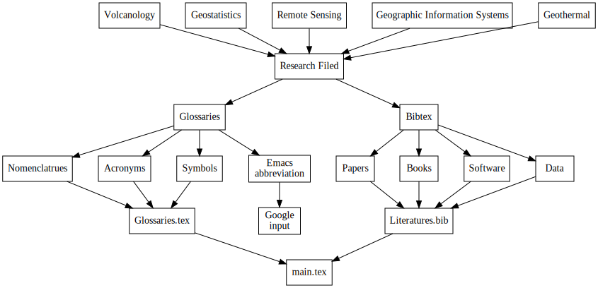
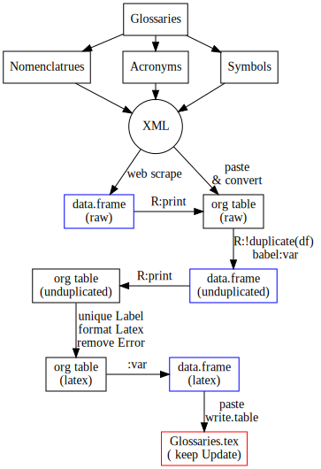

glossaR
Table of Contents
1 Abstract ignoreheading
Abstract：
2 fig:glossarworkflow
digraph {
fontname="Times";
fontsize = 12;
splines = false;
ranksep = 0.5;
nodesep = 0.5;
node [shape = box]
//1. set node
vol [label = "Volcanology"]
gs [label = "Geostatistics"]
rs [label = "Remote Sensing"]
gis [label = "Geographic Information Systems"]
gt [label = "Geothermal"]
study [label = "Research Filed"]
gls [label = "Glossaries"]
nomencl[label = "Nomenclatrues"]
acro [label = "Acronyms"]
symbol [label = "Symbols"]
bib [label = "Bibtex"]
glsfile[label = "Glossaries.tex"]
bibfile[label = "Literatures.bib"]
main [label = "main.tex"]
//2. set path
{gs, gis, rs, gt, vol} -> study -> {gls, bib}
gls -> {nomencl, acro, symbol} -> glsfile -> main
bib -> {"Papers", "Books", "Software", "Data"} -> bibfile -> main
//3. set rank
{rank = same; gs, gis, rs, gt}
}

3 fig:work with R to extract glossaries
digraph {
fontname="Times";
fontsize = 12;
splines = false;
ranksep = 0.2;
nodesep = 0.5;
node [shape = box]
//1. set node
gls [label = "Glossaries"]
nomencl[label = "Nomenclatrues"]
acro [label = "Acronyms"]
symbol [label = "Symbols"]
xml [label = "XML", shape = circle]
df0 [label = "data.frame \n (raw)", color = blue]
df1 [label = "data.frame \n (unduplicated)", color = blue]
df2 [label = "data.frame \n (latex)",color = blue]
orgTable0 [label = "org table \n (raw) "]
orgTable1 [label = "org table \n (unduplicated)"]
orgTable2 [label = "org table \n (latex)"]
glsfile [label = "Glossaries.tex \n( keep Update)", color = red, fill=gray]
//2. set path
gls -> {acro, nomencl, symbol} -> xml
xml -> df0 [label = " web scrape"]
xml -> orgTable0 [label = " paste \n& convert"]
df0 -> orgTable0 [label = " R:print"]
orgTable0 -> df1 [label = " R:!duplicate(df) \l babel:var"]
orgTable1 -> df1 [label = " R:print", dir = back]
orgTable1 -> orgTable2 [label = " unique Label \n format Latex \n remove Error"]
orgTable2 -> df2 [label = ":var "]
df2 -> glsfile [label= " paste\n write.table", weight = 10]
//3. set rank
{rank = same; df0, orgTable0}
{rank = same; df1, orgTable1}
{rank = same; df2, orgTable2}
}

4 R:
5 tbl:Restec
############################################################################### ## R code chunk: ###############################################################################
6 Remote Sensing Glossaries
6.1 http://www.ldeo.columbia.edu/res/fac/rsvlab/glossary.html
############################################################################### ## R code chunk: ###############################################################################